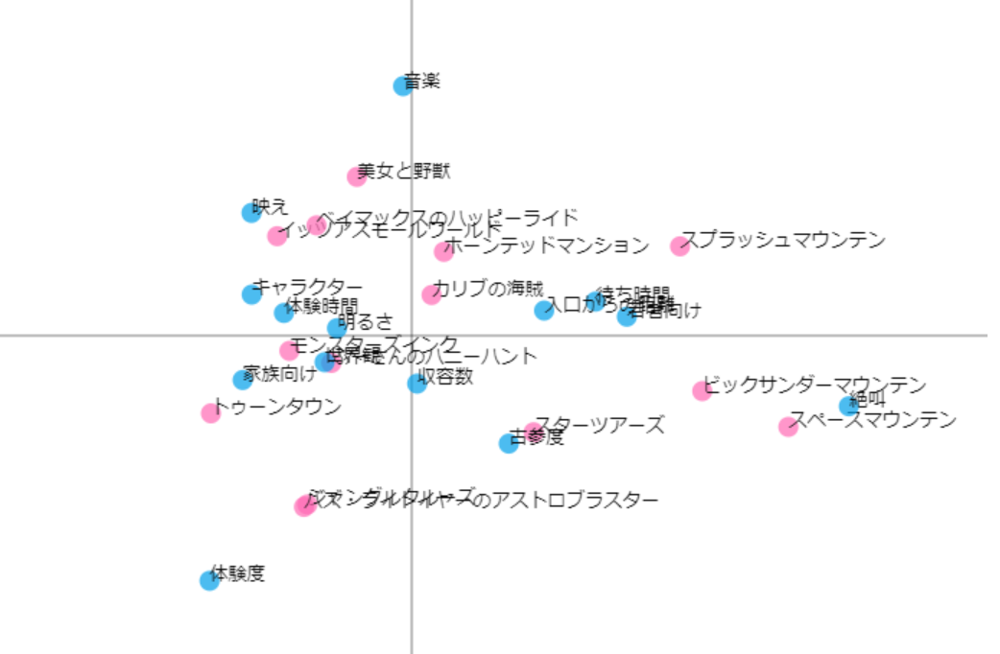

Sea
・中心から左側にあるアトラクションは、絶叫系である。
・「タワーオブテラー」は若者人気があり、待ち時間が長い。
・ゴンドラ、ランプシアター、マーメイドラグーンは「映え」が大きな特徴である。

Land
・モンスターズインク、ハニーハント、トゥーンタウンは家族向けである。また、Disneyの世界観が表されている。
・美女と野獣、ベイマックス、イッツアスモールワールドは「映え」「音楽」に特徴がある。
Land
・モンスターズインク、ハニーハント、トゥーンタウンは家族向けである。また、Disneyの世界観が表されている。
・美女と野獣、ベイマックス、イッツアスモールワールドは「映え」「音楽」に特徴がある。